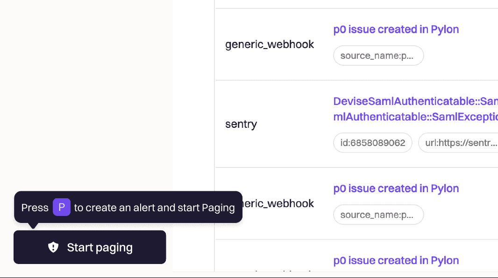
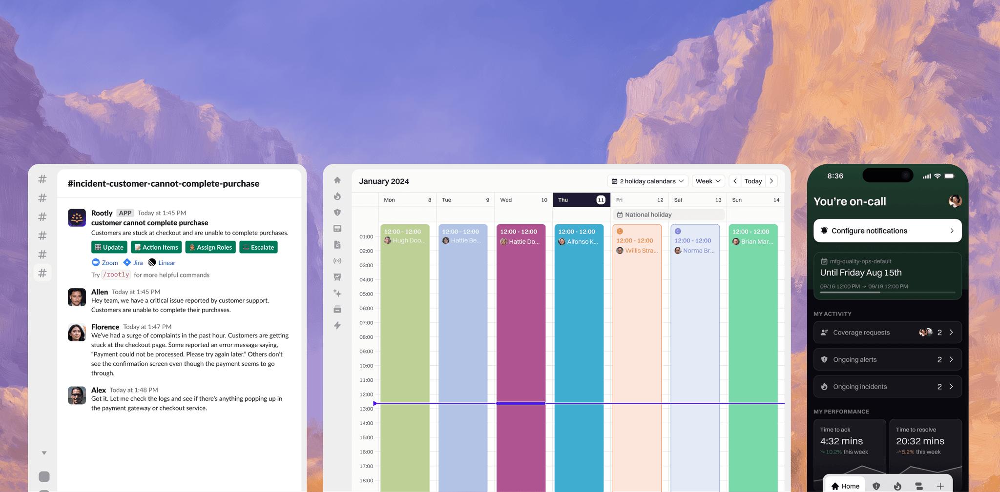
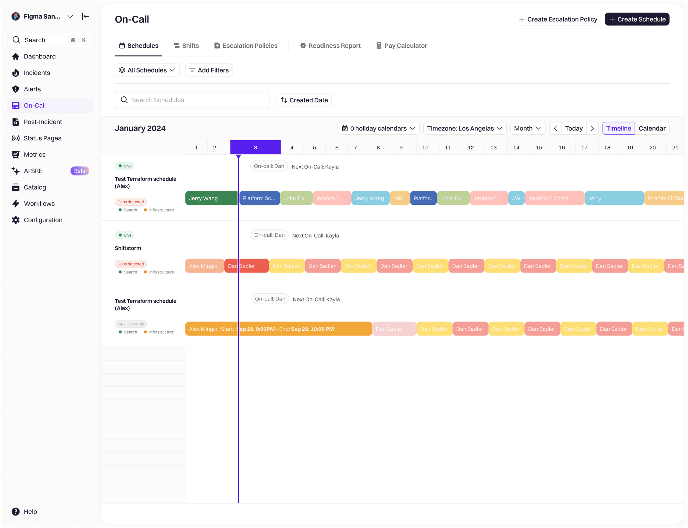
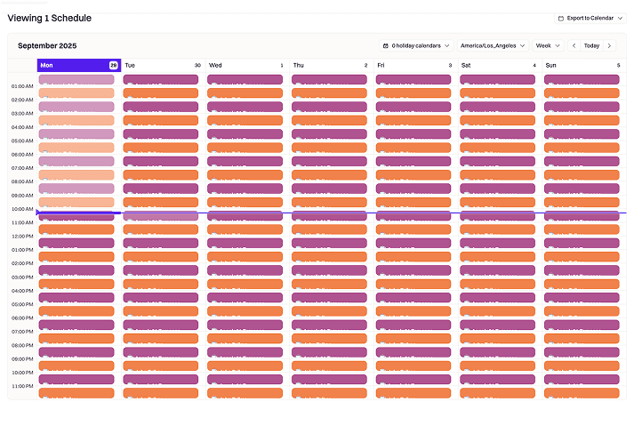
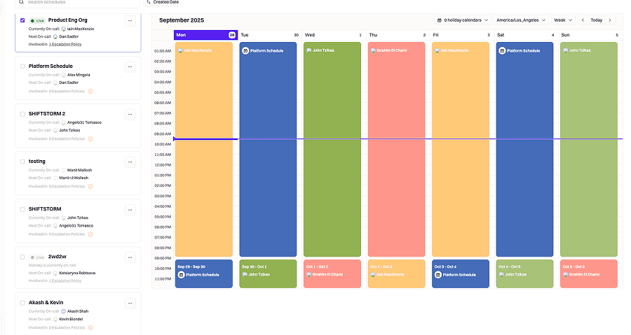
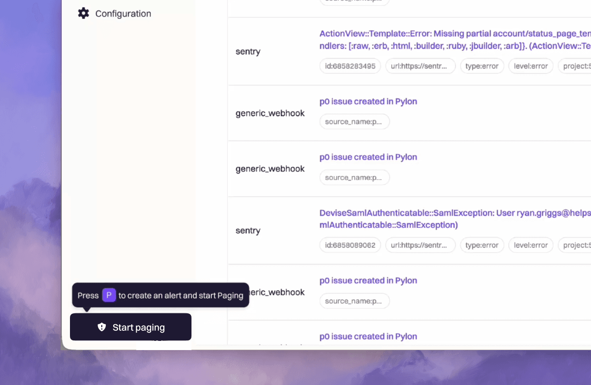
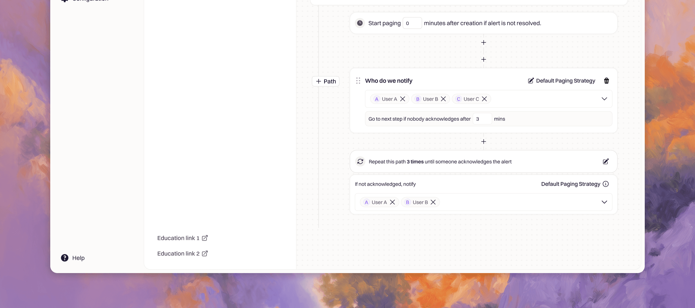
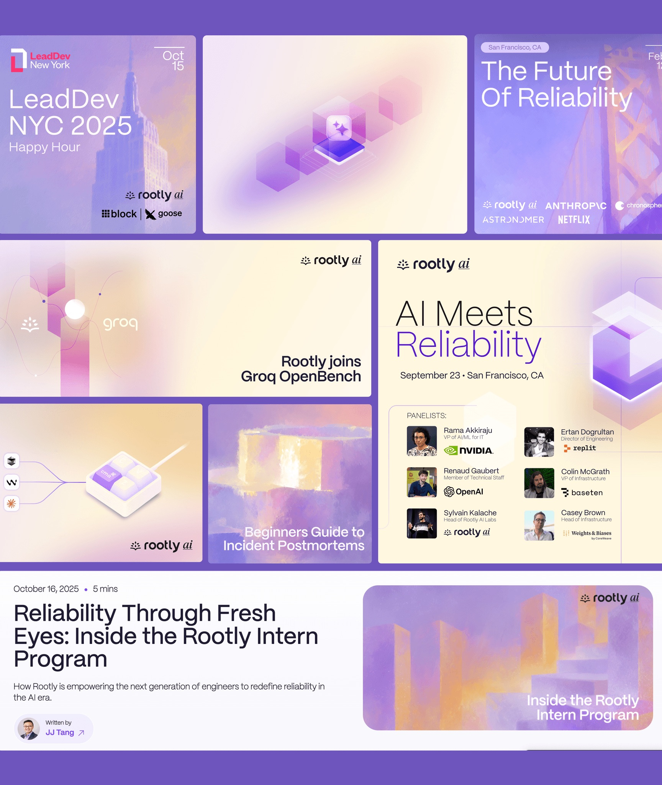
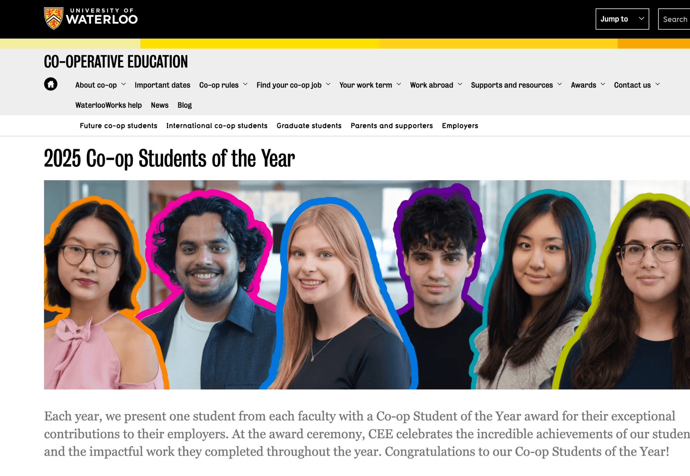
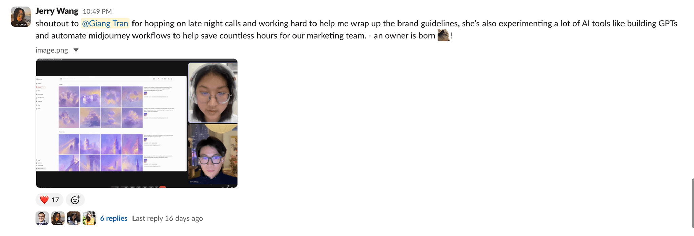

From papercuts to product confidence
Led an initiative of low-effort, high-impact UX improvements, raising product quality
Some areas I worked on: Escalation Policy repeats and fallback, workflow condition, and custom form fields.

Streamlining incident response for Fortune 500 engineering teams through stellar product & branding

TL; DR
Rootly is loved by 100's of leading companies such as Cisco, NVIDIA, Figma, Squarespace, Canva, and more.
The Challenge
Rootly's aggressive product velocity helped secure marquee enterprise customers, but rapid shipping introduced UX inconsistencies that created friction during competitive evaluations against mature incumbents like PagerDuty, Opsgenie and Incident.io.
From papercuts to product confidence
Some areas I worked on: Escalation Policy repeats and fallback, workflow condition, and custom form fields.

Leverage AI for speed and scalability
Improving core platform features

Improving core platform features
On-call schedules
A better way to view on-call schedules across multiple teams and shift owners
Before


Across the platform


10x workflow for brand & marketing
The marketing team required a steady stream of visual assets, from social media posts, blog banners, and speaker cards to across multiple touchpoints. Initially, production was entirely manual and bottlenecked through a single designer (me), making the workflow unsustainable and impossible to scale as demand grew.
I designed and implemented an AI-powered asset generation system that transformed our production process from dependency to autonomy. In parallel, I took ownership of various verticals in our first brand guideline, developing what became distinct sub-brand expressions.

Key Takeaways
Stepping in as Rootly’s first and only design intern meant leaping entirely into the unknown. I embraced that ambiguity to leave a lasting mark: shipping 80+ UX improvements, authoring their first-ever brand guidelines, and saving teams 50+ hours per campaign through generative brand tools. I didn’t just design interfaces but helped shape a design-first culture, a journey that ultimately earned me a billboard on the Times Square, and the Co-op Student of the Year award!
Startups don’t wait for you to catch up. Unlike a “normal” internships, managers lack bandwidth for hand-holding and work isn’t assigned - it’s claimed. Within 2 first months, I delivered full-timer level impact by mastering self-advocacy: identifying gaps, proposing solutions, and proving value through consistent execution whether in brand or product. I learned that asking questions is how you accelerate growth and earn trust in fast-moving environments.
The real achievement wasn’t output volume, it was building a repeatable playbook that outlives individual projects. I applied impact-effort triage to prioritize quick wins, then codified this approach into our design system so future interns could replicate the same measurable impact. In complex platforms like on-call and incident management, stepping back to see systemic connections reveals that many problems share a single root cause.


Next case study
Pure